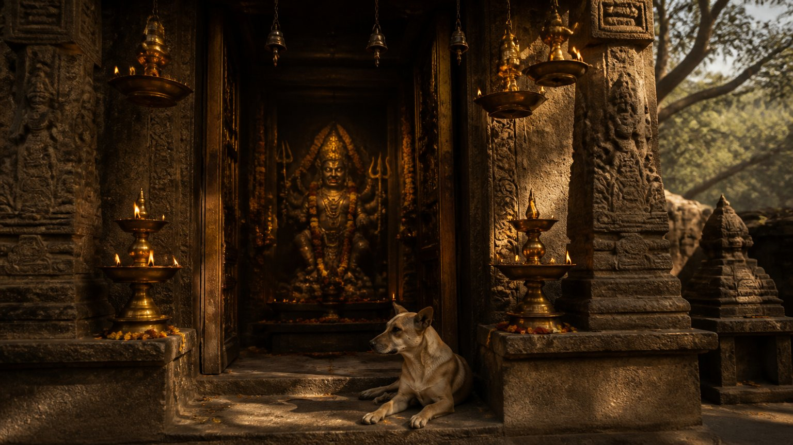

क्या आज भी हम सत्ययुग के नियमों से कलियुग जीतने की कोशिश कर रहे हैं? आचार्य उपेंद्र जी इस प्रवचन में एक सीधा पर असहज प्रश्न रखते हैं: जो मार्ग किसी और युग में सफल हुआ, क्या वही आज भी उतना ही सफल होगा?
संक्षेप में, कलियुग में साधना का मार्ग लक्ष्य पर निर्भर है। व्यक्तिगत मोक्ष किसी भी युग के मार्ग से संभव है, पर संसार में विस्तार के लिए कलियुग में आगम और तंत्र प्रभावी हैं: सत्ययुग में श्रुति, त्रेता में स्मृति, द्वापर में पुराण और कलियुग में आगम। चार मार्गों में से अपना मार्ग गुरु से पूछकर चुनिए।
उनका उत्तर शुक्र ग्रह, आगम और तंत्र, चार साधना-मार्गों और भैरव शक्ति से होकर जाता है। और अंत में यह एक प्रश्न बन जाता है: भारत फिर से विश्वगुरु कैसे बनेगा?
कालाय तस्मै नमः: समय का सम्मान
शास्त्र कहते हैं, "कालाय तस्मै नमः", अर्थात जिस काल में हम हैं, उसी के अनुसार जीना होता है।
आचार्य जी का उदाहरण सरल है। छत्रपति शिवाजी महाराज के समय का सम्मानित वस्त्र पहनकर आज कार्यालय जाइए। या घोड़े पर, रथ पर सवार होकर। या हर संदेश हाथ से लिखे खलीते में भेजिए। कोई आपको रोकेगा नहीं, पर क्या आप आज के संसार में पूर्ण रूप से यशस्वी हो पाएँगे?
वे वस्त्र गलत नहीं थे। वे साधन गलत नहीं थे। बस उनका समय बीत चुका है।
ठीक ऐसे ही कलियुग की भी अपनी रीतियाँ हैं। जैसे राजा परीक्षित के समय, निश्चित अवधि पूरी होते ही कलि अपना रास्ता खोजकर भीतर आ गया, वैसे ही हर युग में काल ही बलवान होता है।
क्या आपकी साधना, आपका काम करने का ढंग, आज के समय के अनुरूप है?
व्यक्तिगत मोक्ष बनाम संसार में विस्तार
यहाँ एक बारीक अंतर समझना ज़रूरी है।
आपका व्यक्तिगत मोक्ष किसी युग का मोहताज नहीं। उसके लिए आप सत्ययुग का मार्ग चुनें या त्रेता का, कोई अंतर नहीं पड़ता।
पर यदि आपको संसार में विस्तार चाहिए, अपना संदेश पूरे विश्व तक पहुँचाना है, तो कलि का नियम लागू होगा। आचार्य जी बताते हैं कि शंकराचार्य जैसे महापुरुष भी कह गए कि कलियुग में कलि का यंत्र और तंत्र ही काम आएगा।
चार युग, चार ज्ञान
तंत्र शास्त्र चार युगों के लिए अलग-अलग आधार बताता है:
कृते श्रुत्युक्त आचारस्त्रेतायां स्मृतिसम्भवः।
द्वापरे तु पुराणोक्तः कलावागमसम्मतः॥
"सत्ययुग में आचरण श्रुति के अनुसार था, त्रेता में स्मृति के अनुसार, द्वापर में पुराणों के अनुसार, और कलियुग में आगम के अनुसार।"
(कुलार्णव तंत्र)
- सत्ययुग: श्रुति, अर्थात वेद और वेदांत, गुरु से कानों द्वारा सुना गया ज्ञान।
- त्रेतायुग: स्मृति, जैसे मनुस्मृति, जिसमें समाज, परिवार और धर्म के नियम हैं।
- द्वापरयुग: पुराण, जिनमें भक्ति रस प्रधान है।
- कलियुग: आगम, अर्थात तंत्र।
इसका अर्थ यह नहीं कि पूजा गलत है। आचार्य जी कहते हैं कि वह व्यक्तिगत मुक्ति के लिए चलेगी। पर बड़े लक्ष्यों और शीघ्र परिणाम के लिए इस युग में आगम का ज्ञान विशेष रूप से आवश्यक है।
बैलगाड़ी से भी कन्याकुमारी से दिल्ली पहुँचा जा सकता है। पर यदि जल्दी पहुँचना है, तो सही वाहन चुनना होगा।
आगम और तंत्र का असली अर्थ
आगम में "आ" सर्वव्यापकता का संकेत है और "गम" गति का। अर्थात वह विद्या जो गति से प्रगति कराए। कलियुग में आयु छोटी है, इसलिए गति का महत्व है।
तंत्र (tantra) वह ज्ञान है जो विस्तार करे और प्राणीमात्र की रक्षा करे। "त्र" का गहरा अर्थ है त्राण, अर्थात रक्षा।
इस दृष्टि से आचार्य जी इंटरनेट को भी एक तंत्र कहते हैं: एक क्षण में संदेश पूरे विश्व में, बैठे-बैठे। जो इसका उपयोग जानेगा, वह कलियुग में अधिक यशस्वी होगा।
कृत्रिम बुद्धि: सेवक या शिक्षक?
कृत्रिम बुद्धि (Artificial Intelligence) भी एक सिद्धि है। पर ज्ञान सत्वगुण के अधीन है, इसलिए यह साधन सात्विक हाथों में होना चाहिए।
आचार्य जी का अपना तरीका ध्यान देने योग्य है। वे जब भी इसका उपयोग करते हैं, पूछते हैं: तुमने ऐसा क्यों लिखा? किस नियम से? स्रोत क्या है? और उससे सीखकर अपनी बुद्धि बढ़ाते हैं।
उद्देश्य सीखना है, केवल छोटा रास्ता पकड़ना नहीं।
जब आप कृत्रिम बुद्धि से कुछ लिखवाते हैं, तो क्या उससे कुछ सीखते भी हैं?
शुक्र: कलियुग का ग्रह
शुक्र स्तोत्र में शुक्राचार्य को "दैत्यानां परमं गुरुम्", दैत्यों के परम गुरु, कहा गया है। तो उनकी साधना क्यों?
क्योंकि कलियुग में दैत्य ही अधिक हैं।
आगम और तंत्र के सारे गुण शुक्र के अंतर्गत आते हैं। शुक्राचार्य के पास मृतसंजीवनी विद्या थी, वे "सर्वशास्त्रप्रवक्तारं" थे, सब शास्त्रों के ज्ञाता। आज जो आँकड़ों का विश्लेषण, श्रीविद्या और कौटिल्य जैसी नीति जानता है, वही आगे बढ़ता है।
दो गुरु, एक प्रश्न: अनुयायी किसके अधिक होंगे?
आचार्य जी एक प्रयोग करवाते हैं।
एक गुरु आदर्श ब्रह्मचर्य सिखाता है, हनुमानजी को आदर्श बताता है। ज्ञान सही है, लाभ भी सही हैं। दूसरा उसी मूलाधार के शास्त्र, काम, को सिखाता है और दिखाता है कि उससे भी पुरुषार्थ के मार्ग से मोक्ष तक कैसे पहुँचा जा सकता है।
एक कहता है, "यह सब मोह-माया है, छोड़ दो।" दूसरा कहता है, "यह श्रीविद्या है, इससे धन भी मिलेगा और बुद्धि भी नहीं बिगड़ेगी।"
कलियुग में किसके अनुयायी अधिक होंगे?
आचार्य जी स्पष्ट कहते हैं कि दोनों मार्ग सही हैं। प्रश्न केवल यह है कि इस काल में विस्तार किसका होगा।
जैसे गुड़ के पास पहली चींटी पहुँचते ही कुछ मिनटों में चारों दिशाओं से कतार लग जाती है, वैसे ही जब लोगों को समझ आता है कि किसी मार्ग से लाभ होता है, भीड़ वहाँ उमड़ पड़ती है।
गीता का निर्देश: ज्ञानी लोगों को कर्म से विमुख न करे
न बुद्धिभेदं जनयेदज्ञानां कर्मसङ्गिनाम्।
जोषयेत्सर्वकर्माणि विद्वान्युक्तः समाचरन्॥
"ज्ञानी पुरुष को चाहिए कि वह कर्मों में आसक्त लोगों की बुद्धि में भ्रम, अर्थात कर्मों के प्रति अश्रद्धा, उत्पन्न न करे, बल्कि स्वयं शास्त्रविहित सब कर्म भली-भाँति करते हुए उनसे भी वैसे ही करवाए।"
(श्रीमद्भगवद्गीता ३.२६)
आचार्य जी इसे गुरु के लिए सीधा निर्देश मानते हैं। विवाह, व्यापार, धन कमाना, पूजा, कुछ भी गलत नहीं। गुरु को इन्हें सही ढंग से करके दिखाना है।
पर ध्यान रहे, बात शास्त्रविहित कर्मों की है। मदिरालय चलाना सिखाना इसमें नहीं आता।
कलियुग में दमन (suppression) सिखाओगे, तो समस्या होगी। नियंत्रण सिखाना एक बात है, पर कलि में विस्तार चाहिए तो इच्छाओं को पवित्र करना सिखाना होगा।
एक गाल पर थप्पड़: पूर्व और पश्चिम की विडंबना
आचार्य जी स्वामी विवेकानंद की पुस्तक "प्राच्य और पाश्चात्य" (The East and the West) की ओर ध्यान दिलाते हैं।
यीशु मसीह ने पश्चिम को सिखाया कि कोई एक गाल पर मारे तो दूसरा गाल आगे कर दो, फिर भी पश्चिम विश्व जीतने के युद्धों में लगा रहा। और भारत में हर अवतार, हर देवता के हाथ में शस्त्र था, हर गुरु ने कहा "उठो, लड़ो", फिर भी यहाँ लोग शरणागत होकर बैठ गए।
चाणक्य का पाठ: समस्या को जड़ से मिटाओ
एक बार चाणक्य के पैर में काँटा चुभा। उन्होंने देखा कि वह किस पौधे से आया, और उसके चारों ओर मट्ठा डाल दिया। शिष्यों ने कारण पूछा तो बोले कि अब चींटियाँ और कीड़े आएँगे और पूरा पौधा खा जाएँगे। पौधा समाप्त, तो काँटा समाप्त, और समस्या फिर कभी सिर नहीं उठाएगी।
कलियुग के लिए यही विद्या है: मूल कारण का उपचार।
दक्षिण मार्ग: सुंदर, पर क्या युग उतना सीधा है?
दक्षिण मार्ग का अर्थ दक्षिण दिशा नहीं, दाहिना मार्ग है, जिसे संसार सामान्य और सही मानता है: "मनुष्य प्रेम के लिए जन्मा है, द्वेष से किसका भला हुआ है?"
यह मार्ग सीधा-सादा है। पर क्या युग उतना सीधा-सादा है?
श्रीकृष्ण गीता के चौदहवें अध्याय में तीन गुणों का वर्णन करते हैं। दुर्गा सप्तशती में मधु-कैटभ, महिषासुर, शुंभ-निशुंभ, रक्तबीज जैसी समस्याएँ आती ही रहती हैं। राम के युग में भी असुर ऋषियों को चैन से जीने नहीं देते थे।
आचार्य जी कहते हैं कि अहिंसा के कार्य करने के लिए अपने आसपास ऐसे लोग चाहिए जो प्रहार करने में समर्थ हों। जो हिंसा अहिंसा की स्थापना करती है, उसे हिंसा नहीं कहा जाता। सेना, पुलिस, सुरक्षाकर्मी, सब महाकाली के अंतर्गत हैं। हमारे शरीर की श्वेत रक्त कणिकाएँ भी तो रक्षा के लिए ही बनी हैं।
साधना के चार मार्ग कौन से हैं: दक्षिण, वाम, सिद्धांत, कौल?
आचार्य जी साधना के चार स्तर बताते हैं:
- १दक्षिण मार्ग: मंदिर में घंटी बजाकर प्रार्थना करने वाला, जो भाग्य पर भरोसा करता है और एक तिलचट्टे को मारने से भी डरता है। इसमें कोई दोष नहीं, यह भी एक मार्ग है।
- २वाम मार्ग: जिसे पता है कि काम कैसे निकलवाना है, किस अधिकारी से मिलना है, कौन सा प्रपत्र जल्दी भरना है। शास्त्र कहता है कि इसे परिणाम शीघ्र मिलते हैं।
- ३सिद्धांत: दक्षिण का बड़ा भाई, वेदांती। आध्यात्मिक सिद्धियों से युक्त, वाम से भी अधिक शक्तिशाली, पर शांत और निवृत्ति मार्ग वाला।
- ४कौल: वाम का भी पिता। वह जो ऊपर तक जाकर फिर नीचे के चक्रों तक लौट आता है। इसे अवतारी स्थिति कहते हैं, जिस मार्ग पर श्रीकृष्ण और श्रीराम चल सकते हैं।
धीमी रेलगाड़ी या बिना ब्रेक की तेज़ रेलगाड़ी?
दक्षिण मार्ग इतनी धीमी रेलगाड़ी है कि चालीस साल बाद भी यह पक्का नहीं कि स्टेशन से निकली या नहीं। वाम मार्ग इतनी तेज़ रेलगाड़ी है कि पहुँचती तो है, पर बिना ब्रेक के, टकराकर।
यदि लक्ष्य गंतव्य तक पहुँचना है, तो आचार्य जी के अनुसार वाम बेहतर है, क्योंकि कम से कम पहुँचाता तो है। और जिसे झटका जल्दी लगता है, उसके सुधरने की संभावना भी जल्दी होती है, जैसे वाल्या से वाल्मीकि।
पर क्या यह सुरक्षित है? नहीं। इसीलिए आगे दो और मार्ग हैं।
आप अभी किस रेलगाड़ी में बैठे हैं?
राजर्षि का योग
एवं परम्पराप्राप्तमिमं राजर्षयो विदुः।
स कालेनेह महता योगो नष्टः परन्तप॥
"इस प्रकार परंपरा से प्राप्त इस योग को राजर्षियों ने जाना। हे परंतप, वह योग बहुत समय बीतने से इस लोक में लुप्त हो गया।"
(श्रीमद्भगवद्गीता ४.२)
गीता कहती है कि यह योग राजर्षियों ने जाना था। राजा, जिसमें रजोगुण है, जिसे रक्षा, कर, चिकित्सा, विदेश नीति, विज्ञान, सब देखना है। रजस में क्रिया है, क्रिया के साथ समस्याएँ हैं, और उन्हें सुलझाना ही पड़ता है।
इसीलिए श्रीकृष्ण बार-बार कहते हैं, "उठ, कर्म कर।" योग केवल ध्यान में बैठना नहीं है।
क्या सिद्धियाँ सचमुच त्याज्य हैं?
बहुत से गुरु कहते हैं कि सिद्धियाँ विष के समान हैं। पतंजलि भी विभूतिपाद में सावधान करते हैं कि सिद्धियाँ पतन का कारण बन सकती हैं।
आचार्य जी पूर्ण सम्मान के साथ प्रश्न करते हैं: तो संत ज्ञानेश्वर का दीवार चलाना क्या था? साईं बाबा का पानी से दीये जलाना? हनुमानजी की अणिमा, लघिमा, गरिमा? क्या ये सब गलत थे? वे बताते हैं कि नवदुर्गा में सबसे ऊँची, नौवीं स्थिति को तो सिद्धिदात्री कहा गया है, तो सिद्धियाँ गलत कैसे हुईं?
असली प्रश्न सिद्धि का नहीं, उसके उपयोग का है। सामान्य व्यक्ति उसे संभाल नहीं सकता, इसलिए उसे कहा जाता है कि छोड़ दो। वाम में अग्नि है, अधिक शक्ति है। संभाल सकते हैं तो वह आपका मार्ग है, नहीं तो शांत मार्ग।
भैरव: निर्भयता की शक्ति
भैरव शिव का वह रूप है जिसके तेज से ही सामने वाला लड़ने से पहले डर जाता है। कलियुग में जिसके पास भैरव शक्ति होगी, वह अभय होगा और उसे कम सताया जाएगा।
भैरव तत्व का अर्थ है आपके जीवन में कोई ऐसा मित्र, सहायक, शिष्य या हितचिंतक जो केवल आपके लिए खड़ा हो।
- जिस गुरु पर भैरव कृपा हो, उसे समर्पित शिष्य मिलते हैं।
- जिस राजा पर हो, उसे प्राण देने वाले सैनिक मिलते हैं।
- शिवाजी महाराज और महाराणा प्रताप के लिए असंख्य वीरों ने प्राण दिए।
- क्रांतिकारी हँसते-हँसते फाँसी चढ़ गए।
मुगल कहते थे, "शत्रु हो तो शिवा जैसा।" वे डरते थे, क्योंकि उनमें भैरव था।
यह शक्ति लड़ाई के लिए नहीं, इसलिए है कि बहू इतनी तेजस्वी हो कि कोई उस पर अत्याचार न कर सके, कोई अधिकारी आपको सता न सके, कोई विदेशी देश की ओर आँख न उठा सके।

पंचमकार का अर्थ क्या है? तंत्र के पाँच साधन
भैरव तंत्र में तंत्र के पाँच साधन बताए गए हैं, पंचमकार: मद्य, मांस, मत्स्य, मुद्रा और मैथुन।
सुनने में ये पूरी तरह वाम मार्ग के लगते हैं। आचार्य जी इन्हें तीन स्तरों पर खोलते हैं।
तामसिक स्तर: इनका सीधा, स्थूल अर्थ। मदिरा बुद्धि को बंद करके मन में बैठे विचार को स्थिर कर देती है। आचार्य जी मुंबई हमले का उल्लेख करते हैं, जहाँ आक्रमणकारियों ने पहले होटल में जाकर पी। यह तामसिक भैरव है, और यह खतरनाक है।
राजसिक स्तर: वही नशा, थोड़े बदले रूप में: गैसयुक्त पेय, बर्गर, पिज़्ज़ा, मिश्रित आहार।
सात्विक स्तर: यहीं असली रहस्य है।
- मद्य: सोमरस, अर्थात भक्ति का रस। राष्ट्रभक्ति, गुरुभक्ति का ऐसा नशा कि गुरु कहें "उठ" तो उठ जाए।
- मांस: मनुस्मृति के अनुसार "मां स भक्षयिता", जिसे मैं आज खाता हूँ, वह कल मुझे खाएगा। सात्विक अर्थ है वाणी पर संयम, और स्वयं को देश और गुरु के लिए अर्पित करना, आत्मनिवेदन।
- मत्स्य: इड़ा, पिंगला और सुषुम्ना में चलता प्राण, जो मान-अपमान, जय-पराजय, लाभ-हानि से ऊपर उठाता है।
- मैथुन: पुरुष और प्रकृति का मिलन, अर्धनारीश्वर स्थिति। धन भी प्रकृति है, सत्ता भी; इनके साथ सम्मानपूर्वक रहते हुए इनमें अटकना नहीं।
- मुद्रा: वे क्रियाएँ जो अपने आप घटती हैं, अकर्म, लीला।
आचार्य जी कहते हैं कि जिस दिन सात्विक भैरव शक्ति आएगी, उसी दिन हमारा विश्वगुरु होना तय हो जाएगा।
आपके जीवन में भक्ति का "मद्य" कितना है?
सनातन धर्म: न डराओ, न डरो
अर्धनारीश्वर स्थिति का अर्थ है: किसी के सिर पर बंदूक तानने जितना क्षत्रिय, और उसे डराकर छोड़ देने जितना ब्राह्मण। रक्त की आवश्यकता न हो तो न बहे।
नाग के लिए डसना आवश्यक नहीं, पर फुफकारना आवश्यक है। आचार्य जी के शब्दों में सनातन धर्म यही कहता है:
- किसी को मारो मत, पर किसी की मार भी मत खाओ।
- किसी को डराओ मत, पर किसी से डरो भी मत।
- हम किसी को छेड़ते नहीं, पर कोई छेड़े तो उसे छोड़ते भी नहीं।
कलियुग में विस्तार किसका?
आचार्य जी का विश्लेषण है कि आज अन्य धर्मों का विस्तार इसलिए दिखता है क्योंकि उनके पास वाम है, भले ही वह तामसिक या राजसिक हो। भविष्य पुराण का संदर्भ देकर वे कहते हैं कि वे काली तत्व के उपासक हैं।
और हम? आपस में झगड़ते रह गए। केवल धन और लक्ष्मी की उपासना से नहीं, कलियुग में जो काली और भैरव का उपासक होगा, वही बड़ा होगा।
पर उत्तर उनकी नकल नहीं है। यदि हमारे पास भी तामसिक भैरव आ गया, तो अंतर क्या रहा? उत्तर है सात्विक भैरव: शस्त्र से नहीं, शास्त्र से लड़ना; संकल्प-सिद्धि से परिणाम दिखाना।
कौल: इस युग की आवश्यकता
कौल का मूल है "कुल": "कु" अर्थात पृथ्वी तत्व, मूलाधार, और "ल" अर्थात लय। कुंडलिनी जहाँ तक उठकर लीन होती है, उसी से "कुल-कुंडलिनी" शब्द आता है।
इसी से कुलदेवता भी आते हैं। आचार्य जी बताते हैं कि हर कुल की अपनी देवी है, जैसे रेणुका माता हृदय चक्र की, जिनके कुल में उपचारक अधिक होंगे। वर्ण व्यक्तिगत है और बदल सकता है, पर कुल पितरों से आया रक्त है।
सिद्धांती बड़ा गुरु है, पर उसका विस्तार कलियुग में अधिक नहीं टिकता। गौतम बुद्ध ने संन्यास सिखाया, पर अगली पीढ़ियाँ उसके लिए तैयार नहीं थीं। वाम का राज बहुत चलेगा, और उसे रोकने के लिए कौल ही चाहिए: चतुर, कौटिल्य जैसा, अवतारी।
परित्राणाय साधूनां विनाशाय च दुष्कृताम्।
धर्मसंस्थापनार्थाय सम्भवामि युगे युगे॥
"सज्जनों की रक्षा, दुष्कर्म करने वालों के विनाश और धर्म की स्थापना के लिए मैं युग-युग में प्रकट होता हूँ।"
(श्रीमद्भगवद्गीता ४.८)
धर्म की स्थापना के लिए दुष्कृत को काटना भी होता है। साम, दाम, दंड, भेद में दंड भी है।
मेरे लिए कौन सा मार्ग?
यह निर्णय स्वयं मत लीजिए, गुरु से पूछिए।
- जो मच्छर मारने से भी डरता है, बीमार है, सीधा-सादा है, उसके लिए दक्षिण।
- जो थोड़ा व्यावहारिक है, डरता नहीं, उसे गुरु किसी काम के लिए वाम दे सकते हैं।
- जो शांतचित्त है, हिमालय जाने का पात्र है, उसके लिए सिद्धांत।
- जिसमें भैरव शक्ति और वह "नशा" आ चुका है, उसके लिए कौल।
मोक्ष चाहिए, हिमालय चाहिए, तो सिद्धांती के पास जाइए, वह कहेगा वैराग्य और मोक्ष। न्याय चाहिए, धन चाहिए, तो कौल के पास, वह कहेगा भोग भी और मोक्ष भी।
महिलाओं को पहले उठना होगा
आचार्य जी विशेष रूप से महिलाओं से कहते हैं कि उन्हें भैरवी शक्ति सीखनी होगी। दो हज़ार वर्षों की दासता के बाद मिली स्वतंत्रता का उपयोग अधिकतर राजसिक-तामसिक दिशा में हुआ है। वे कहते हैं कि अब समय की यही माँग है, महिलाओं को पहले उठना पड़ेगा।
आने वाले समय में झाँसी की रानी और मीराबाई, दोनों प्रकार की स्त्रियाँ चाहिए; विवेकानंद और शिवाजी महाराज, दोनों प्रकार के पुरुष।
गुरु पर आक्षेप हों, तब भी टूटना मत
कलियुग में तोड़-फोड़ बहुत होगी। लोग आपके गुरु पर दो ही आरोप लगाएँगे: धन का, या काम का। बुद्ध, विवेकानंद, एकनाथ, तुकाराम, कोई नहीं बचा। पर जिन शिष्यों में भैरव शक्ति थी, वे डगमगाए नहीं।
आचार्य जी पूछते हैं: कोई आपकी माँ के बारे में उल्टा कहे, तो क्या आप पहले माँ से जाकर पूछते हैं? जिसे माँ समझ आती है, उसे गुरु माउली समझ आती है, उसे भारत माता समझ आती है।
धनुर्धर कब उठेगा?
यत्र योगेश्वरः कृष्णो यत्र पार्थो धनुर्धरः।
तत्र श्रीर्विजयो भूतिर्ध्रुवा नीतिर्मतिर्मम॥
"जहाँ योगेश्वर कृष्ण हैं और जहाँ धनुर्धारी अर्जुन है, वहीं श्री, विजय, ऐश्वर्य और अटल नीति है; ऐसा मेरा मत है।"
(श्रीमद्भगवद्गीता १८.७८)
केवल योगेश्वर कृष्ण पर्याप्त नहीं, लड़ने को तैयार धनुर्धारी अर्जुन भी चाहिए। गुरु मार्ग दिखाने आता है, पर जिसे पीड़ा है, उसे स्वयं उठना है।
आचार्य जी कहते हैं, अतिमानवीय शक्ति पर्याप्त नहीं, परम दिव्य शक्ति की आवश्यकता है। और यह पूरा पंचमकार भीतर है, अंतर में। इसीलिए नाम है अंतरयोग।
उनका संदेश सीधा है: करो तो ठीक से करो, वरना कुछ मत करो। आधी-अधूरी साधना नहीं। स्वयं से पूछो कि मैं कहाँ गलत गया, मेरा कुल, मेरा देश, और अंततः पूरा मानव-परिवार कहाँ गलत गया।
आचार्य जी का विश्वास है कि यदि हम सही समय पर, विशेषकर 2029 से 2034 के बीच, जाग गए, तो भारत फिर से विश्वगुरु होगा।
आपके भीतर का अर्जुन कब जागेगा?
मुख्य सीख
- कालाय तस्मै नमः: हर युग का अपना मार्ग है; व्यक्तिगत मोक्ष किसी भी मार्ग से संभव है, पर संसार में विस्तार के लिए कलियुग में आगम और तंत्र प्रभावी हैं।
- सत्ययुग में श्रुति, त्रेता में स्मृति, द्वापर में पुराण, और कलियुग में आगम प्रधान है।
- शुक्र कलियुग का ग्रह है, और कलियुग में वैकल्पिक नहीं।
- दक्षिण, वाम, सिद्धांत और कौल चार मार्ग हैं; कोई गलत नहीं, पर कलियुग में कौल ही वाम को रोक सकता है। अपना मार्ग गुरु से पूछकर चुनें।
- सिद्धियाँ त्याज्य नहीं, प्रश्न उनके उपयोग का है; नवदुर्गा की सर्वोच्च स्थिति सिद्धिदात्री है।
- भैरव शक्ति निर्भयता और समर्पित सहयोगियों की शक्ति है; बिना भैरव तत्व के शिष्य तत्व का महत्व नहीं।
- पंचमकार का सात्विक अर्थ: भक्ति रस, आत्मनिवेदन, प्राण-संतुलन, अर्धनारीश्वर स्थिति, और सहज लीला।
- सनातन धर्म: किसी को डराओ मत, पर किसी से डरो भी मत।
- महिलाओं को भैरवी शक्ति और वेदांत, दोनों सीखने होंगे।
- गुरु पर आक्षेप हों तो टूटो मत; करो तो ठीक से करो, वरना कुछ मत करो।
आगे पढ़ें

क्या आपने कभी सोचा है कि हम पूजा क्यों करते हैं? दक्षिणा की परंपरा कहाँ से आई? और इतने सारे देवता, हर इच्छा के लिए अलग पूजा, यह सब कैसे बना?

हम अक्सर महाकाली को केवल उग्र रूप में देखते हैं। पर क्या आपने कभी सोचा है कि दुर्गा सप्तशती का पहला खंड महाकाली का ही क्यों है?

गुरुदेव के अनुसार भारत का भविष्य उज्ज्वल तो है, पर वह बहुत सारी कठिनाइयों से होकर आएगा। नया प्रशासन और नया भारत एक ही आधार पर खड़ा होगा: आध्यात्मिक…